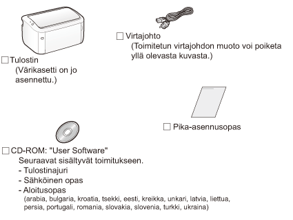
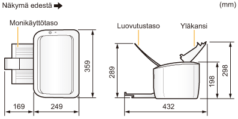

Toimitettujen varusteiden tarkistus
Varmista ennen tulostimen asennusta, että pakkaus sisältää kaikki mukana toimitettavat varusteet.
Jos jokin nimike puuttuu tai on vahingoittunut, ota yhteys paikalliseen valtuutettuun Canon-myyjään.

|
HUOMAUTUS
|
|
Tietoja liitäntäkaapeleista
Tulostimen mukana ei toimiteta liitäntäkaapelia. Käytä tietokoneeseen tai kytkentätapaan sopivaa kaapelia.
Käytä USB-kaapelia, jossa on seuraava merkki.
 |
Asennuspaikan tarkastus
Jotta tämän tulostimen käyttö on turvallista ja ongelmatonta, sijoita tulostin seuraavat ehdot täyttävään paikkaan.
Lämpötila- ja kosteusolosuhteet
|
Lämpötila-alue
|
10–30°C (50–86°F)
|
|
Kosteusalue
|
20–80 % RH (ei tiivistymistä)
|
Virtalähdevaatimukset
120–127 V (±10 %), 50/60 Hz (±2 Hz)
220–240 V (±10 %), 50/60 Hz (±2 Hz)
Asennusvaatimukset
Riittävästi tilaa
|
|
 |
Varmista riittävä asennustila katsomalla seuraavasta eri osien mitat.

|
Hyvä ilmanvaihto
Tasainen, vaakasuora pinta
Alusta, joka kantaa vaivatta tulostimen painon